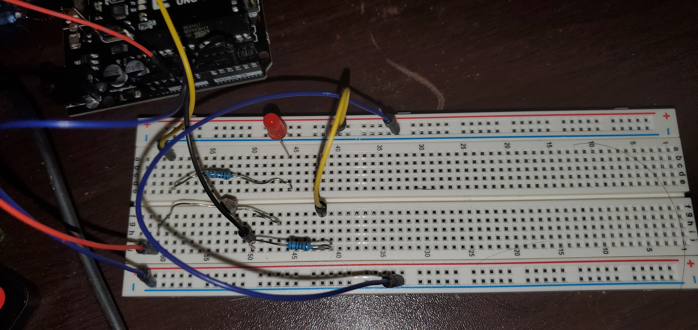
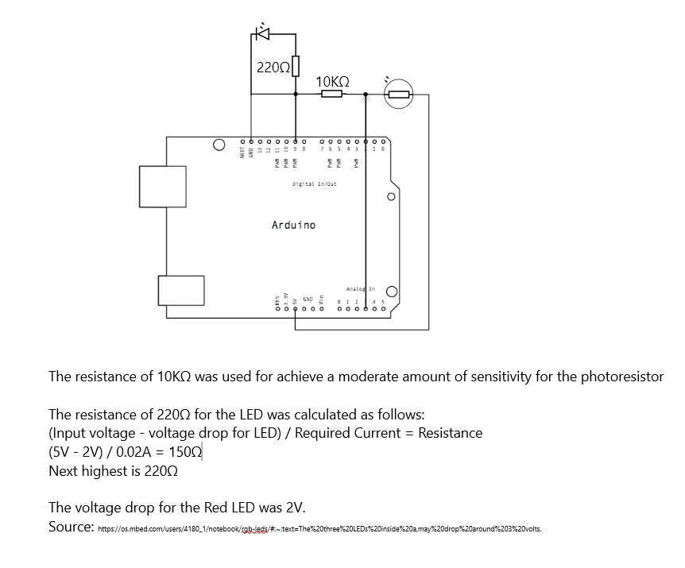

Arduino Night Light

Schematic
Code
/*
Adapted from analog input out serial code.
http://www.arduino.cc/en/Tutorial/AnalogInOutSerial
*/
// These constants won't change. They're used to give names to the pins used:
const int analogInPin = A3; // Analog input pin that the photoresistor is attached to
const int analogOutPin = 9; // Analog output pin that the LED is attached to
int sensorValue = 0; // value read from the photoresistor
bool on = false; // state of light
void setup() {
// initialize serial communications at 9600 bps:
Serial.begin(9600);
}
void loop() {
// read the analog in value:
sensorValue = analogRead(analogInPin);
int outVal = 255; //output val set to max for LED
Serial.print("init check ");
Serial.print(sensorValue);
if (sensorValue <= 10) { // if sensor value less than 10 and it is dark
sensorValue = analogRead(analogInPin);// double check to account for fluctation
delay(3000);
if (sensorValue <= 10) {
for (int i = 0; i <= 255; i++) {
analogWrite(analogOutPin, i);
delay(20);
on = true;
}
}
}
while (sensorValue <= 10) { // while sensor value stays low keep light on
Serial.print("cycle check ");
Serial.print(sensorValue);
analogWrite(analogOutPin, outVal);
sensorValue = analogRead(analogInPin); // keep checking the value after 3 seconds
delay(3000);
}
delay(3000);
sensorValue = analogRead(analogInPin);
Serial.print("final check ");
Serial.print(sensorValue);
//once the sensor value exceeds 10, check it once more to account for random fluctations
// if it is low again then fade the light if it was on
if (sensorValue >= 100 && on) {
for (int i = sensorValue; i >= 0; i--) {
analogWrite(analogOutPin, i);
on = false;
delay(20);
}
}
// change the analog out value:
// print the results to the Serial Monitor:
// wait 2 milliseconds before the next loop for the analog-to-digital
// converter to settle after the last reading:
delay(2);
}
Result